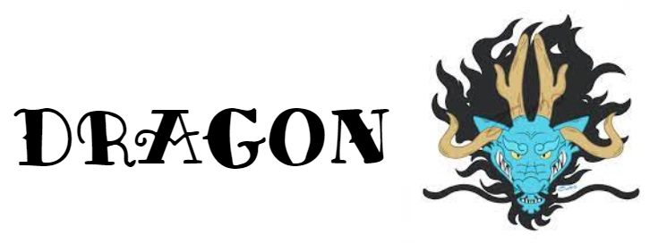

<!-- the header will show up on EVERY page since it is connected to base.html -->
{% load static menu_tags cache %} <!-- gets tags from menu_tags.py in the menus/templatetags folder -->
{% get_menu "header" as navigation %}

<nav class="navbar navbar-expand-lg navbar-light">
    <div class="container">
        <a href="/" class="navbar-brand">
            <!-- allows django to locate static folder -->
            
        </a>
        <button class="navbar-toggler" type="button" data-toggle="collapse" data-target="#navbarMenu" aria-controls="navbarMenu" aria-expanded="false" aria-label="Toggle navigation">
            <span class="navbar-toggler-icon"></span>
        </button>
        <div class="collapse navbar-collapse" id="navbarMenu">
            <ul class="navbar-nav ml-auto">
                {% cache 2592000 site_header %} <!-- 259200 = 1 month -->
                    {% for item in navigation.menu_items.all %}
                        <li class="nav-item active">
                            <a href="{{ item.link }}" class="nav-link" {% if item.open_in_new_tab %}target="_blank"{% endif %}>
                                {{ item.title }}
                            </a>
                        </li>
                    {% endfor %}                
                {% endcache %}

            </ul>
        </div>
    </div>
</nav>